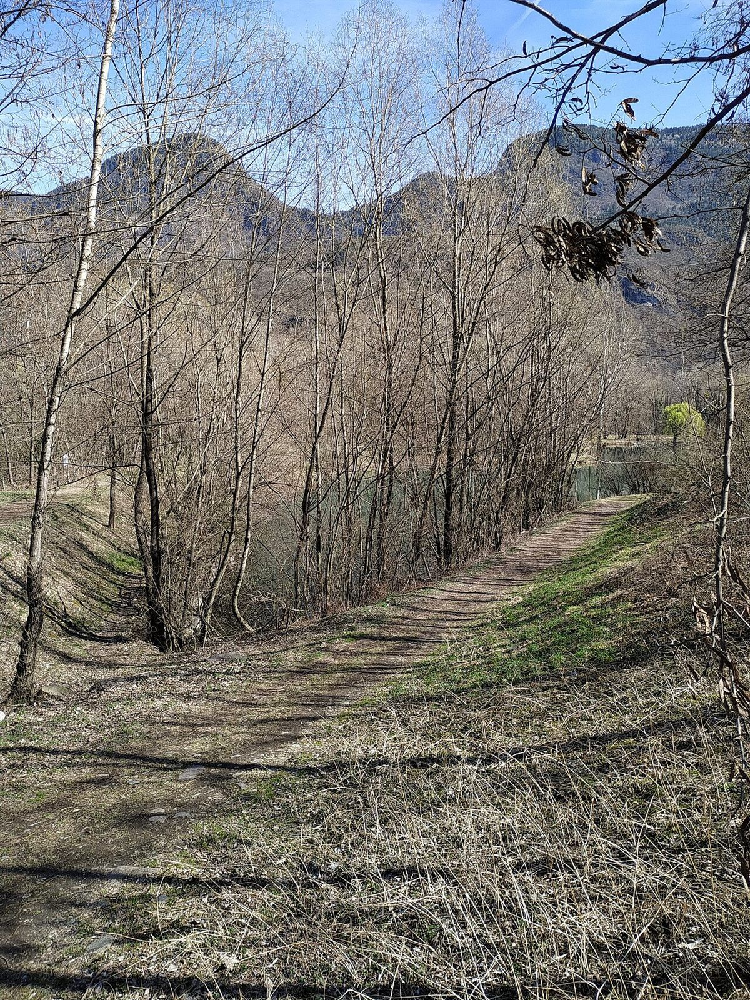

アクセス
岐阜県瑞浪市釜戸町3137-3
| 営業時間 | 準備中(お問い合わせください) |
|---|---|
| 定休日 | 準備中(お問い合わせください) |
| 駐車場 | 準備中(お問い合わせください) |
| 公共交通 | 準備中(お問い合わせください) |

イメージ写真(実際の周辺ではありません)
ご来店前にお電話でご確認ください
岐阜県瑞浪市釜戸町のベーカリー
掲載写真はフリー素材のイメージで、お店の実際の商品・店内・外観ではありません。他の地域で撮影されたものや、撮影地が不明なものを含みます。
岐阜県瑞浪市釜戸町3137-3
| 営業時間 | 準備中(お問い合わせください) |
|---|---|
| 定休日 | 準備中(お問い合わせください) |
| 駐車場 | 準備中(お問い合わせください) |
| 公共交通 | 準備中(お問い合わせください) |

イメージ写真(実際の周辺ではありません)
ご来店前にお電話でご確認ください